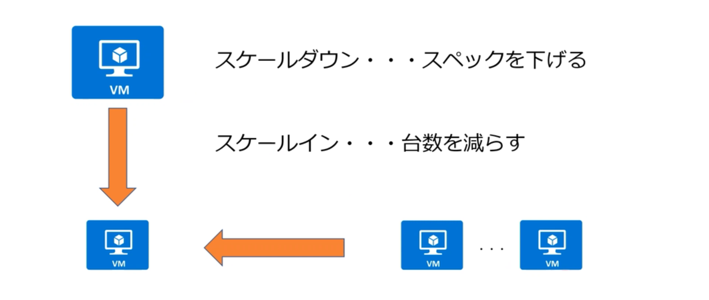
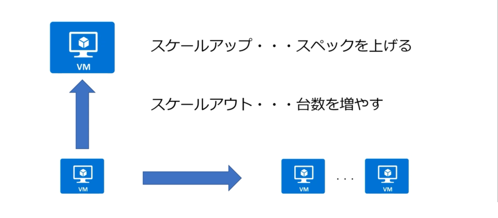
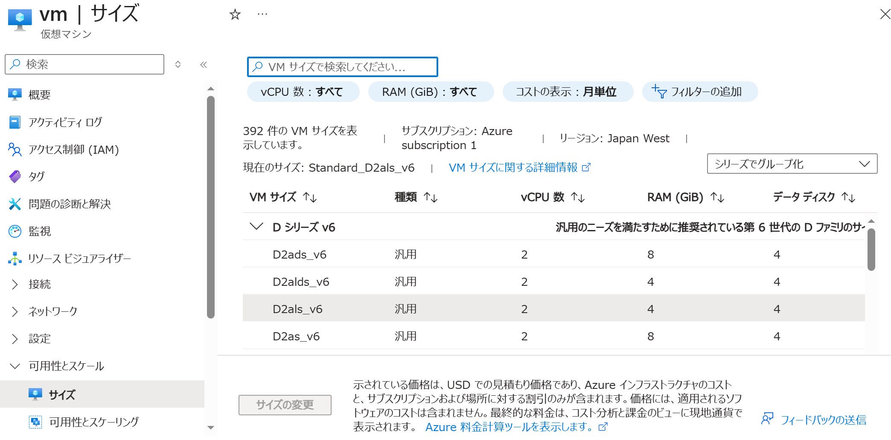
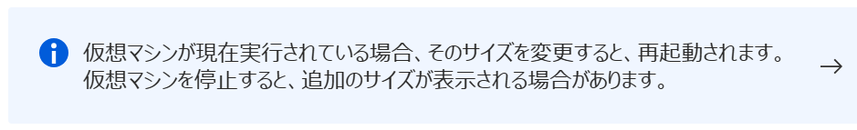
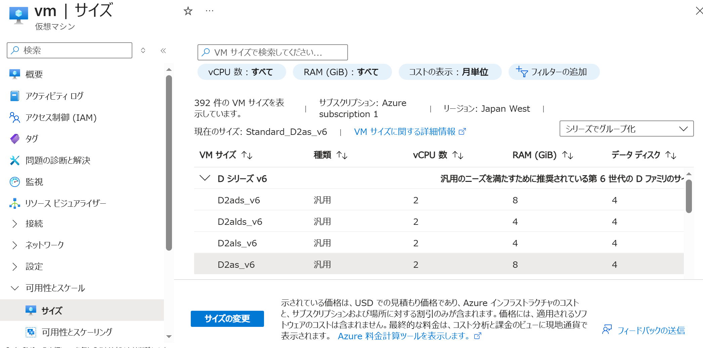
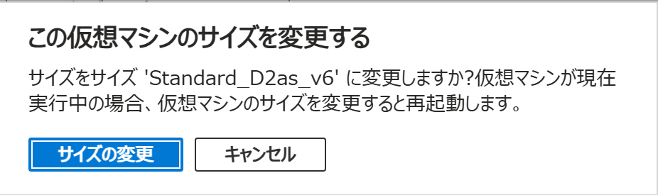
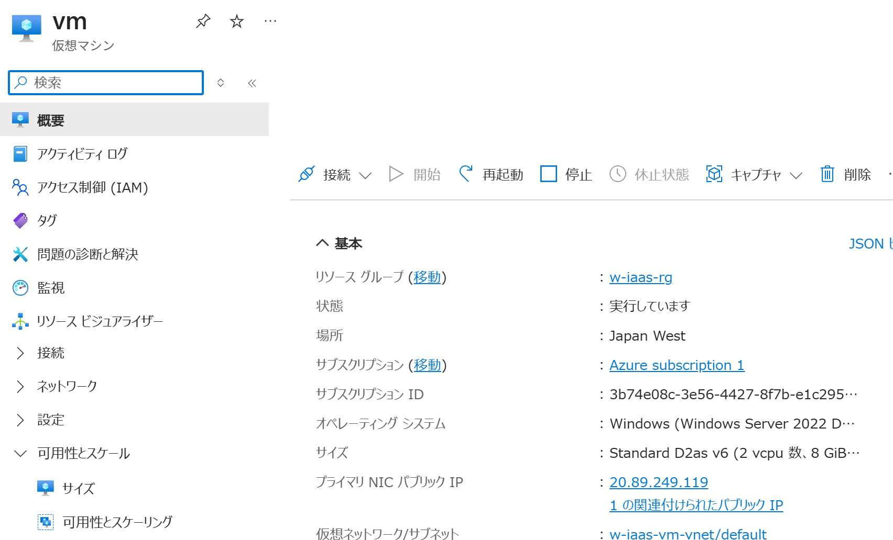

仮想マシンをスケールアップする
適用対象: ✔️ 仮想マシン
この演習では、Azure ポータルを使用して 仮想マシンを手動でスケールアップします。
所要時間: 約 5 分
先行の演習
この演習を始める前に 仮想マシンを作成する を完了してください。
スケールダウン・スケールイン

スケールアップ・スケールアウト

スケールアップ
DBサーバのように排他的に書き込み要求を処理する必要がある場合など
スケールアウト
Webサーバのように同時並行で大量の読み取り要求を処理する場合など
仮想マシンのスケールアウト・スケールインを自動化する場合は、仮想マシン スケール セットを利用します。
タスク 1: 仮想マシンのスケールアップ
仮想マシンを手動でスケールアップします。
- ポータルメニューから [仮想マシン] を選択します。
msaz-vmを選択します。- サービスメニューから 可用性とスケール ＞ [サイズ] を選択します。
- 現在の VM サイズ を確認します。

- 仮想マシンが実行中の場合、サイズを変更すると仮想マシンが再起動されます。
ここでは再起動されても問題ないので、実行中であった場合もそのまま続行します。
- 現在の vCPU 数、RAM (GiB) よりも大きな VM サイズ を選択します。

- [サイズの変更] を選択します。
- [サイズの変更] を選択します。

- 完了を待ちます。
タスク 2: 作成されたリソースの確認
仮想マシンの VM サイズ が変更されていることを確認します。
- ポータルメニューから [仮想マシン] を選択します。
msaz-vmを選択します。- サービスメニューから [概要] を選択します。
- サイズ が変更されていることを確認します。
